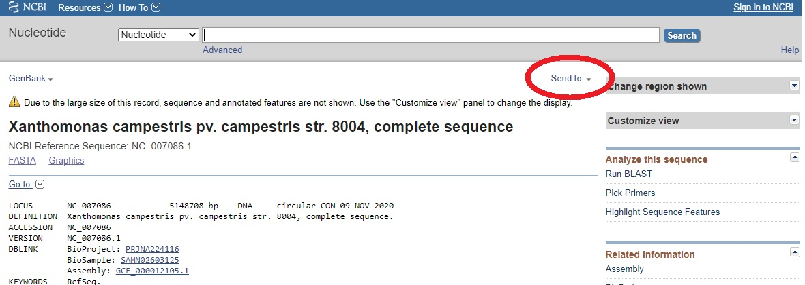
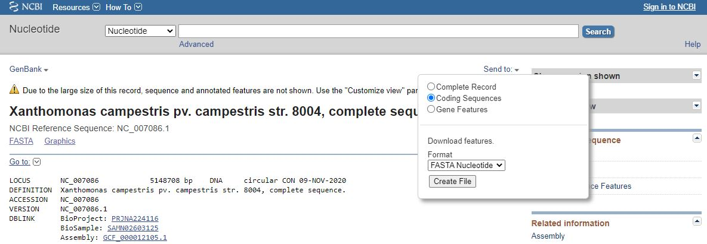
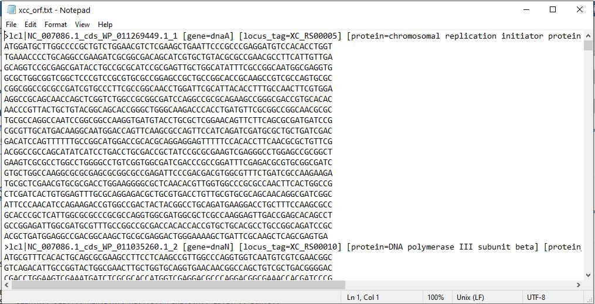

How to get to the ORFs file:
An example using Xanthomonas campestris pv. campestris str. 8004
(1) Go to NCBI's RefSeq page
(2) Type "Xanthomonas campestris pv. campestris str. 8004" and hit "Seach".

(3) In the upper right corner, press the "send to" button:

(4) Choose Coding Sequences and make sure that you download the nucleotide FASTA file:

I renamed the file that I downloaded to be "xcc_orf". This file looks like this:
